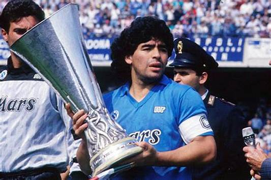
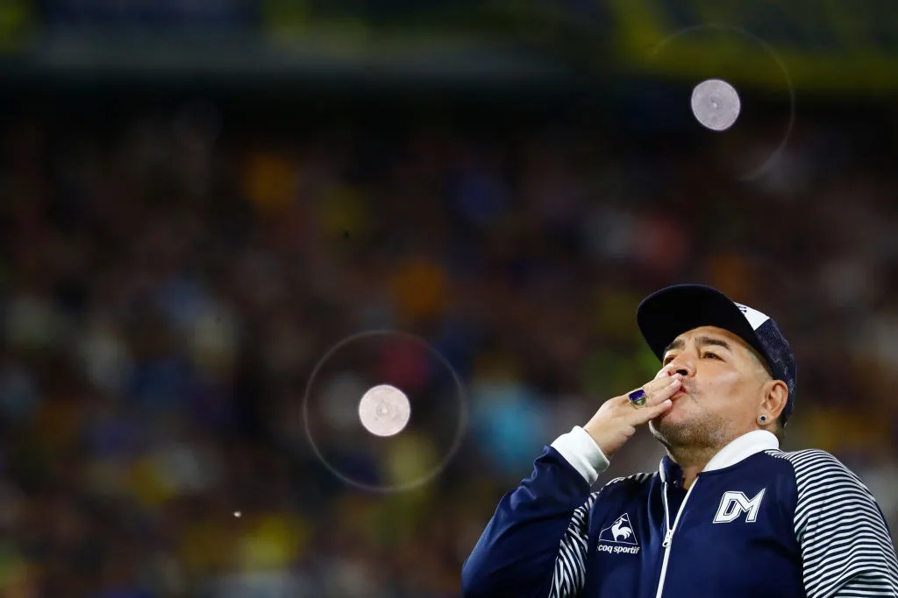

His destination was Napoli, for yet another world record – £5m this time. Within weeks, Napoli sold a staggering 70,000 season tickets. The shady source of the transfer cash guarantee was an open secret. Maradona inspired the club to its first two Serie A titles, two second places, a Coppa Italia and Supercoppa as well as the UEFA Cup. Increasingly, however, Maradona became entangled in his own fame, the claustrophobic adulation, the money, the girls, the drugs…and the Camorra. The maelstrom of entrapment was captured frighteningly in Asif Kapadia’s film, Diego Maradona. Personal trainer Fernando Signorini expressed the dichotomy of his self-destructive genius perfectly, saying: “For Diego, I would go to the end of the world, but for ‘Maradona’ I wouldn’t take a step.” At this point in the 1980s Maradona the footballer could do no wrong. His skill, perception, awareness, range of passing, technique and match-reading were sublime. His left foot magnetised the ball and his skills mesmerised both opponents and fans. Especially Napoli fans who worshipped him with shrines. Simultaneously Maradona turned Argentina into world champions once more in 1986 in Mexico, usurping 1978 skipper Daniel Passarella as captain shortly before the World Cup. This writer was sitting in the Estadio Azteca for the quarter-final against England: we saw what the referee did not, the “Hand of God”. We also all saw the lightning-touch acceleration with which Maradona ghosted through England’s defence for his second goal. He darted in from the right on that occasion then, barely remembered now, scored a mirror-image goal, cutting in from the left this time, in the semi-finals against Belgium. Victory over the old colonialist England, coupled with the cheek of its achievement, was a gesture of national retaliation after the Falklands War. The “Hand of God” expressed a defiance of society’s establishment with all its restrictive rules and regulations. This was why so many millions loved him: Maradona: mocked officialdom in a way they dared not. The more outspoken he became, so the greater the adulation but the more inevitable the revenge of an unforgiving ruling class. The 1990 World Cup in Italy was the beginning of the end. Maradona played inspirationally again, despite badly damaged ankles. He even missed a penalty in the quarter-final shoot-out against Yugoslavia but Argentina still reached the semis. Drama piled upon drama: the draw matched Argentina and Maradona on his adopted home ground in Naples against Italy. Maradona appealed to depressed southern Italy in general, and Napoli fans in particular, to support him as a gesture against the Italy of wealth and privilege. But when Argentina won on penalties, Italy fell out of love with him. In the final Argentina had two men sent off and lost 1-0 to West Germany on a contentious late spot-kick. Maradona, in tears at the final whistle, furiously blamed a conspiracy between FIFA’s Brazilian president Joao Havelange and Italy’s governing elite. Suddenly Maradona was no fun any more. The balance of power tipped against him. The cocaine parties after Napoli’s weekend matches had been an open secret. Dope testers turned up regularly but only later in the week when illicit substances had been sweated away. That was the deal. Until March 17, 1991. Then a test from a post-match swoop after a 1-0 victory over Bari came up positive. Revenge served cold. He was banned for 15 months. Maradona sought to revive his career in Spain with Sevilla and again with Newell’s Old Boys, before leading Argentina to the 1994 World Cup. There, in a press conference in Dallas, FIFA decreed this comeback over with a dope test for ephedrine and a new 15-month ban. He had played his 91st and final game for Argentina, scoring the last of his 34 goals. A further comeback with Boca ended in another dope test, which forced permanent retirement. But abandoning the game that had been his life was out of the question. A string of short-lived coaching appointments followed in UAE, Mexico and Argentina (latterly with Gimnasia de La Plata). He even led Argentina to the quarter-finals of the 2010 World Cup in South Africa. Along the way Maradona was treated for weight problems, drug addictions, a heart attack and a concoction of health issues. Yet he remained a magnet for fans and media everywhere. He was still working with Gimnasia when he was diagnosed with a subdural hematoma in November and underwent emergency brain surgery. He seemed to have come through the operation and was released from the clinic when he suffered a fatal heart attack at his home in Tigre. Argentina declared three days of national mourning. Before the funeral his coffin lay in state at the Casa Rosada presidential palace. So many stories: the financial fall-outs with his agents; the paternity suit brought by Cristiana Sinagra; friendship with Fidel Castro; firing an air gun at reporters outside his home; and the derisive barb he offered me five years ago about old FIFA president Sepp Blatter “who was chasing champagne while I was winning World Cups.” Yet also the solo goal which brought admiring Real Madrid fans to their feet in his first season at Barca; a cameo at Tottenham in tandem with Glenn Hoddle at Ossie Ardiles’ testimonial; the reverse-passing magic with Careca at Napoli; and fans of so many teams who succumbed to his magic. Maradona counts among the three greatest footballers I have had the privilege to watch in action, along with Pele and Alfredo Di Stefano. As for that third Argentinian, Leo Messi? A wonderful player but not on the same sporting stratosphere. With Maradona there was always a unique volcanic tang of barely repressed danger.
In the musical Evita, Tim Rice created words for Eva Peron that might equally serve as an epitaph for Maradona too: “The choice was mine, and mine completely. I could have any prize that I desired. I could burn with the splendour of the brightest fire. Or else, or else I could choose time.”Football will always honour the brightest fire that was Diego Armando Maradona.